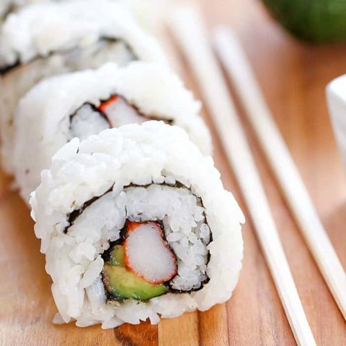

California Roll

How to make:
California Rolls are a great and easy sushi roll you can make and many people like it!
Especially if they aren't familiar with sushi and are interested, this is a must have.
This will require rice, vinegar, seaweed, crab meat, mayonaise, cucumber, and avocados.
Follow these steps on how to make a great california roll!
Ingredients:
- 2 cups sushi rice
- 1/4 cup seasoned rice vinegar
- 4 half sheets of sushi grade nori(seaweed)
- 1 teaspoon sesame seed (this is optional)
- 8 pieces of imitation crab or real crab
- 1 small cucumber to cut into small sticks
- 1 avocado to slice into thin pieces
Steps
- Season rice with rice vinegar, fanning and stirring until its room temperature.
- On a rolling mat, place one sheet of nori with the rough side facing downwards.
- Wet your hands and grab a handful of rice and place onto the nori. Spread the rice evenly
throughout the nori without mashing the rice. Season the rice with a pinch of sesame seeds
if you're using them and then flip it over so the nori is facing upwards.
- Arrange in a horizontal row 1 inch(2.5cm) from the bottom,
the crab followed by a row of avocado and a row of cucumber.
- Grabbing both nori and the mat, roll the mat over the filling so the extra space
at the bottom touches the other side, squeezing down to make a nice tight roll.
Squeeze down along the way to keep the roll from holding its shape.
-
Transfer the roll onto a cutting board. Rub a knife on a damp paper towel before slicing
the roll into six equal portions.
- Bon appetit!
Source: California Roll by Tasty's Kiano Moju